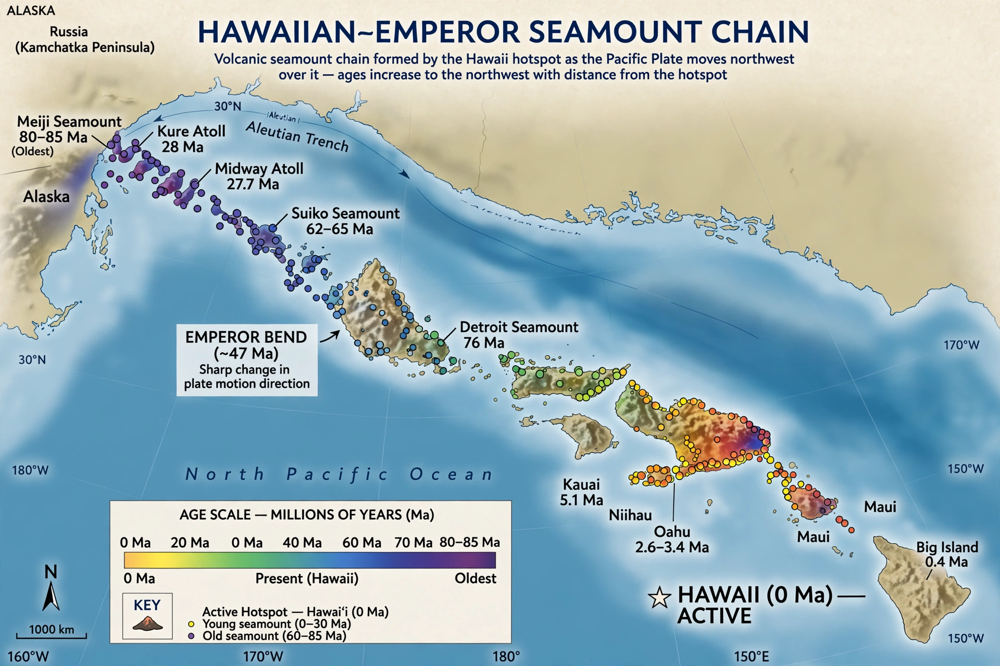

Hotspot (geology)

In geology, a hotspot is a volcanic region thought to be fed by an upwelling plume of hot material from deep in the mantle, largely independent of plate boundaries. Unlike the volcanism of subduction zones and ridges, hotspot volcanoes sit in the middle of plates, and as a plate drifts over the relatively fixed plume a trail of progressively older volcanoes records the plate's motion.
About 40–50 hotspots have been proposed; Hawaii, Iceland, Yellowstone and Réunion are the best known.
Hotspot tracks
The Hawaiian–Emperor seamount chain is the textbook example: a 6,000-kilometre trail bending from active Hawaii (where the newest volcano, Kīlauea and the growing Loihi seamount, sit over the plume) to 80-million-year-old seamounts near Kamchatka. The bend, dated to roughly 47 million years ago, records a change in the Pacific Plate's direction of motion (and possibly drift of the plume itself).
Iceland straddles both a hotspot and the Mid-Atlantic Ridge, which is why it is so volcanically productive; Yellowstone's track of caldera eruptions across the Snake River Plain records North America's passage over its plume.
Debate
The plume hypothesis, proposed by W. Jason Morgan in 1971, remains influential but contested: some geophysicists argue that many 'hotspots' are shallow features of plate tectonics rather than deep plumes, and seismic images of plumes differ by region. The debate is a live frontier of {L('Seismology','seismology')} and mantle dynamics.
See also: Mantle (geology) · Plate tectonics · Volcano · Mid-ocean ridge · Hawaii